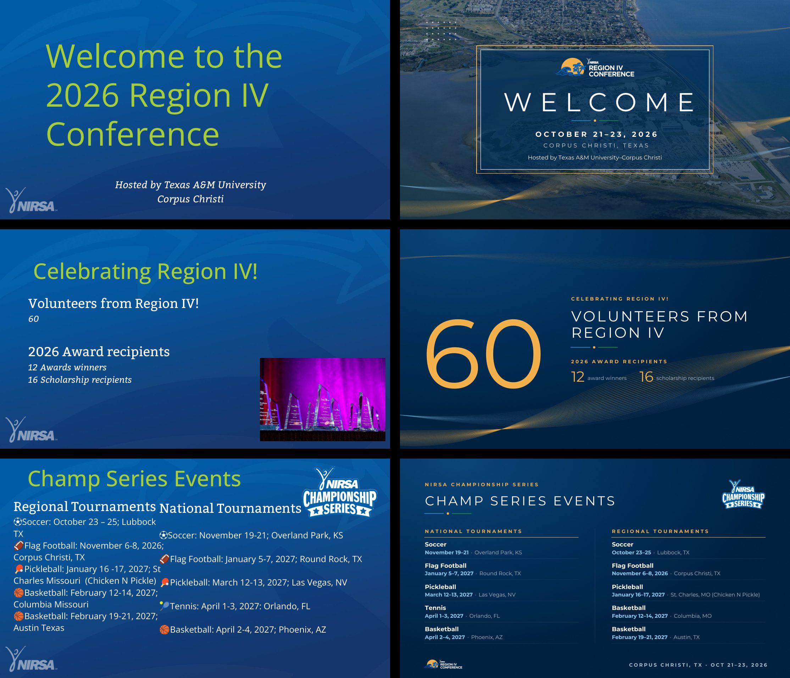
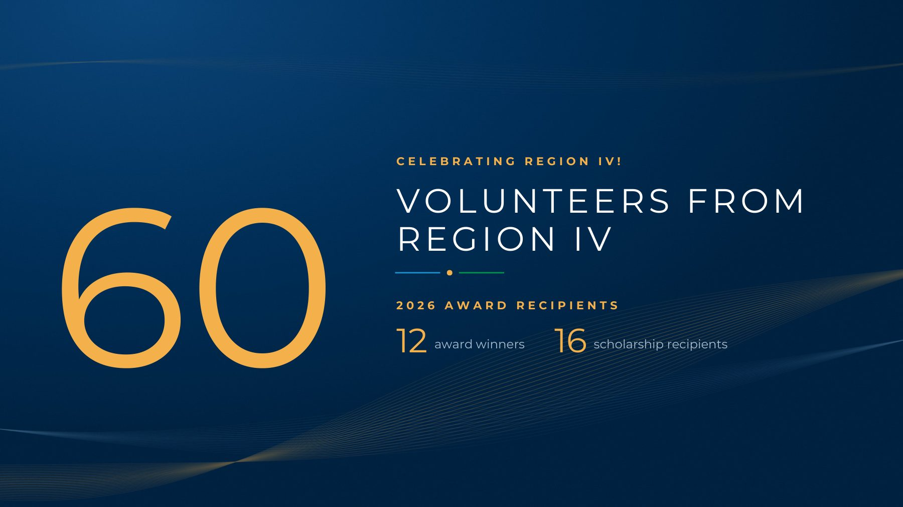
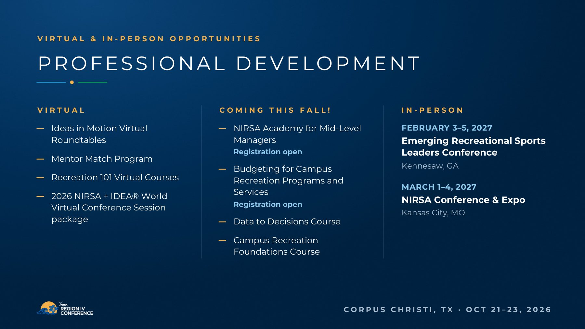
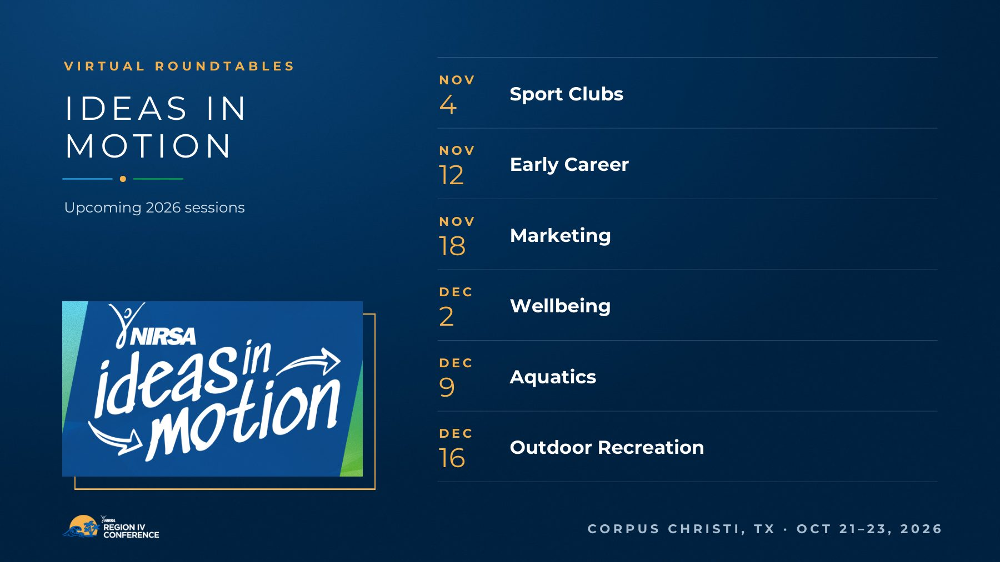
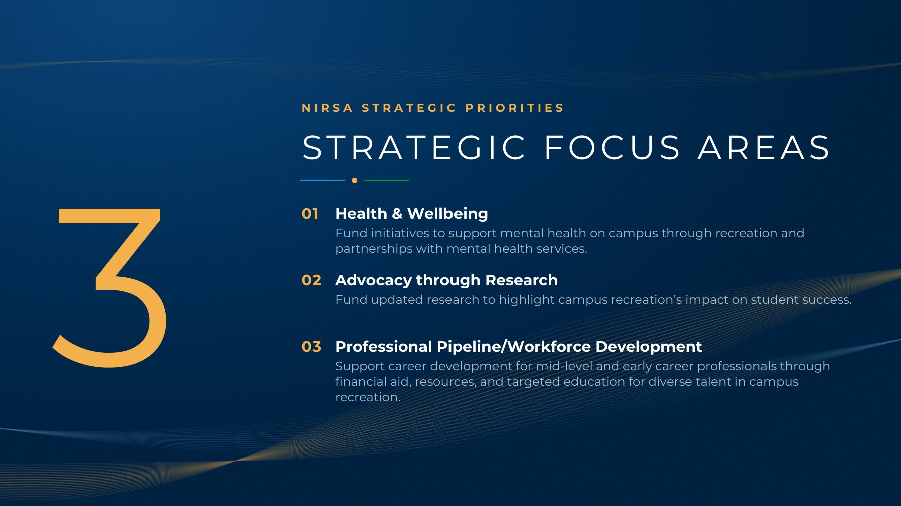
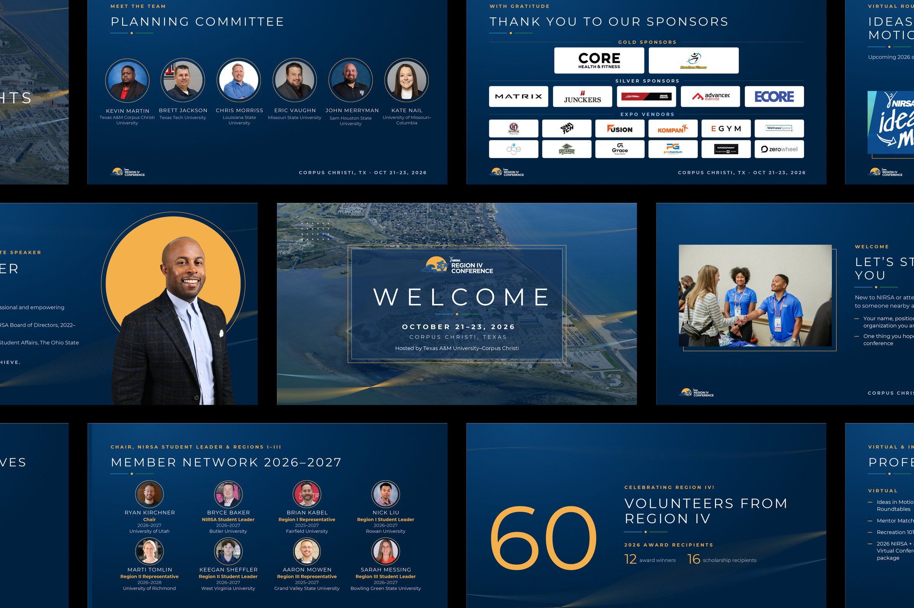
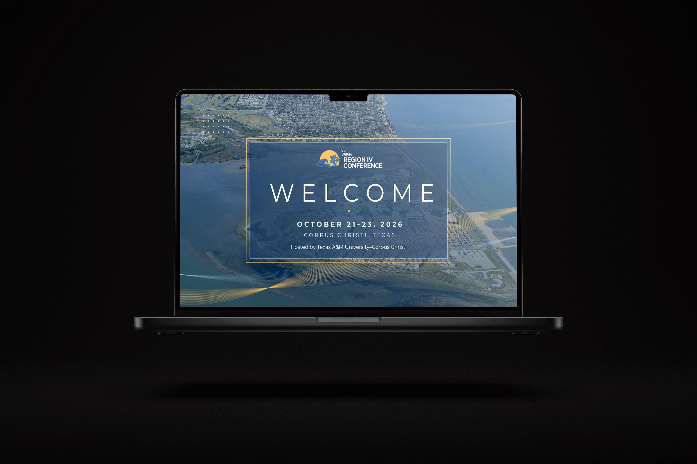

NIRSA Region IV Conference

Bringing information into focus.
- Role
- Design Intern, Marketing
- Context
- Professional; client project for TAMUCC Recreational Sports
- Tools
- Canva
- Deliverables
- 22-slide conference presentation, reusable slide layouts, presentation template, opening and closing slides
The NIRSA Region IV Conference is a professional gathering for campus recreation and university recreation professionals. Hosted by Texas A&M University–Corpus Christi, the 2026 conference brought together regional attendees for educational sessions, keynote presentations, networking, and campus programming.
I was assigned to redesign the conference presentation, transforming an existing text-heavy slideshow into a cohesive and flexible visual communication system.
My proposed direction was selected over the original presentation and developed into a complete conference presentation and reusable slide template.
The original presentation lacked the visual hierarchy and consistency needed to communicate information effectively. Dense text, limited visual variation, and basic layouts made the slides feel disconnected and difficult to navigate.
The challenge was to create a presentation that could accommodate different types of conference information while remaining visually engaging, professional, and easy to follow.
Rather than approaching each slide as an individual composition, I wanted to establish a unified visual language that could support the entire conference experience.

I developed a visual direction inspired by Texas A&M University–Corpus Christi's colors, using a deep navy foundation with warm gold and blue accents.
With creative freedom to establish the presentation's visual identity, I introduced recurring graphic elements, structured typography, and campus photography to create a recognizable connection to the host institution.
The direction balances institutional familiarity with a more contemporary editorial approach to presentation design.

The redesign was developed as a flexible collection of slide layouts rather than a series of isolated designs.
Different compositions accommodate the presentation's varied information needs, including:
- Opening and closing slides
- Conference agendas and daily schedules
- Section dividers and session introductions
- Conference highlights and program comparisons
- Campus tours and host information
- Regional statistics and keynote presentations
- Speaker and committee profiles
- Q&A, session feedback, and sponsor recognition
Each layout follows consistent typographic, color, and spacing principles while allowing the content to determine its composition.
An important part of the project was making the presentation practical to maintain and reuse.
I developed editable layouts with clear content areas and guidance for updating photography, dates, speaker information, session details, and other conference-specific elements.
This approach allows the presentation to accommodate changing information without requiring an entirely new design for every slide.
The selected direction was developed into a complete presentation for the NIRSA Region IV Conference.
The final system brings together consistent typography, structured information hierarchy, institutional color references, and varied layouts to create a cohesive visual experience across the conference materials.
The opening and closing slides establish a recognizable visual identity, while the interior layouts provide flexibility for agendas, schedules, speakers, programming, and other conference information.









The redesigned presentation was selected over the original direction, implemented for the conference, and received positive feedback.
Beyond improving the visual presentation of information, the project demonstrates how a flexible design system can support real-world communication needs.
It reflects my ability to translate an organization's requirements into a cohesive visual direction and develop that direction into a practical, reusable design deliverable.